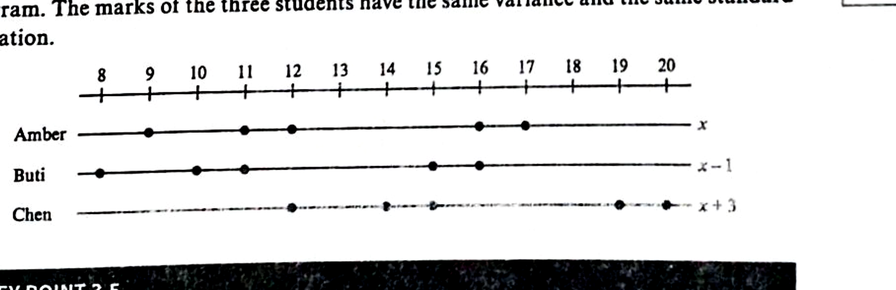

Working with $\sum(x-a)$ and $\sum(x-a)^2$ instead of raw totals — smaller numbers, same answer.
Cambridge 9709 Paper 5 · Topic 5.1 · Ch 3 §3.4 (coding)
Coding is replacing each raw value $x$ with a simpler, transformed value — here, by subtracting the same constant $a$ from every value: $y = x - a$.
Used when the raw numbers are large or awkward (e.g. masses in grams near 500 g) so the arithmetic in $\sum x$ and $\sum x^2$ is quicker and less error-prone.
Geometric meaning. Subtracting $a$ shifts every point along the number line by the same amount — it slides the dataset but does not stretch it.
Let $y = x - a$ where $a$ is any constant. Then:
The mean shifts; the spread does not change.

When the question gives coded totals, use:
These identities unlock almost every coded-data exam question. Keep them visible while you work.
Twenty readings of $y$ are summarised by the totals $\sum(y-5)^2 = 890$ and $\sum(y-5) = 130$. Find the standard deviation of $y$. [Exercise 3D Q2]
Hint: $\text{SD}(y) = \text{SD}(y-5)$.
Exactly 20 years ago, the mean age of a group of boys was 15.7 years, and the sum of the squares of their ages was 16 000. If the sum of the squares of their ages has increased by 8224 in this 20-year period, find the number of boys in the group. [Exercise 3D Q4]
Hint: ages now are $x_i + 20$. Expand $\sum(x_i+20)^2$.